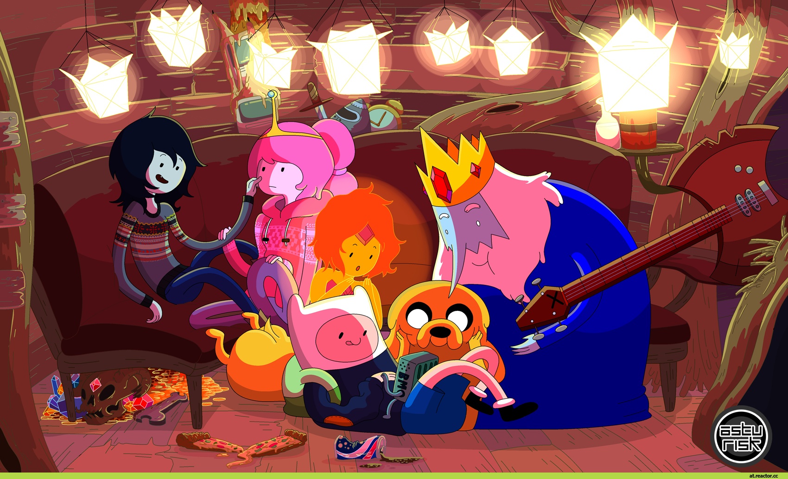
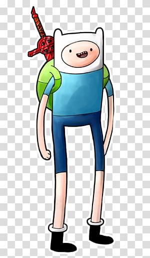

Время приключений один из тех мультиков который сильно запомнился людям родившимся в 2000-х годах, но самое интересное в том что этот мультик закрыли еще в 2016 году.Сериал повествует о необыкновенных и весёлых приключениях двух лучших друзей: мальчика Финна и его собаки Джейка. Действие сериала происходит в волшебной стране Ууу. Финн - 13-летний мальчик, который обожает путешествовать и спасать принцесс из лап ужасных монстров и злодеев, населяющих Землю Ууу. Джейк - лучший друг Финна. Это волшебная собака со способностью растягивать своё тело до практически любых размеров и форм. Джейку 28 лет и он исполняет роль эдакого приятеля-наставника Финна, а его волшебные способности помогают мальчику в его борьбе со злом.
 Фин и Джейк со своими близкими друзьямиДжейк (полное имя: Джейк Пёс, англ. Jake the Dog) — один из главных персонажей в мультсериале Время Приключений. Джейк — это гибрид собаки и шейпшифтера, постоянный компаньон, лучший друг и сводный брат Финна. Джейк еще с "пелёнок" может волшебным образом растягиваться и принимать различные формы. Эта способность множество раз помогала в их с Финном приключениях. Его родители Джошуа и Маргарет, также у него есть сводный брат — Джермейн, родной по отцу. Джейку 28 волшебных собачьих лет, хотя он редко ведет себя как взрослый. Точно неизвестно, скольким человеческим годам жизни соответствует один волшебный собачий. Он и его девушка — Леди Ливнерог — любят играть на альте. В эпизоде "Джейк-отец" у него и Леди Радугарог родилось пятеро щенят-гибридов собаки и ливнерога. Он может принимать любые формы, какие захочет, благодаря своим эластичным силам. Он выглядит как среднего размера собака жёлто-оранжевого цвета; как известно Джейк — это английский бульдог. В эпизоде "Донни", Джейк рассказал, что носит невидимые штаны из паутины, сотканные феями. В эпизоде "Чего не хватало", он носит штаны, которые были на Марселин в эпизоде "Оно пришло из Ночесферы".
Финн Мёртенс (также известный как Финн Человек; идентифицируется на Островах как P-G-8-7 Мёртенс, ранее — Пен в пилотном эпизоде) — один из главных персонажей мультсериала Время Приключений. Финн любим всеми. Он очень добрый и безответственный. В эпизоде "Воспоминания горы Бум-Бум" показано, как Финн в младенчестве бродил один в лесу. Он сделал "как-как" (англ. "boom-boom", сходил "по-большому") на большой листок и упал на него. Затем семья собак-детективов Джошуа и Маргарет забрали его оттуда, чтобы воспитать его вместе со своими собственными детьми — псом Джейком и Джермейном. В эпизоде "Воспоминание о воспоминании" малыш Финн поёт песню маленького Финна в ванной, скорее всего, в доме Джошуа и Маргарет. В эпизоде "Прислужник", когда Финна спрашивают о родителях, он в шутку говорит, что Джейк рассказал ему, будто его нашли в капусте. В эпизоде "Сильная Сьюзан" Финн понимает, что ничего не знает об его настоящих родителях — людях и о человеческой расе в целом. В эпизоде "Предсмертный список дел Билли" он узнаёт, что его человеческий отец жив и находится в месте под названием Цитадель. Финн решает увидеться с отцом, однако встреча не приносит ничего, кроме боли и разочарования. Также позже в сериале у Финна появляется другой "приёмный брат" Мартин Второй — коала-гуманоид и лидер повстанческой инопланетной группировки, которого когда-то подобрал Мартин и нарёк своим сыном. Позже Мёртенс бросает своего нового "сына" в похожий способ, как однажды бросил Финна.